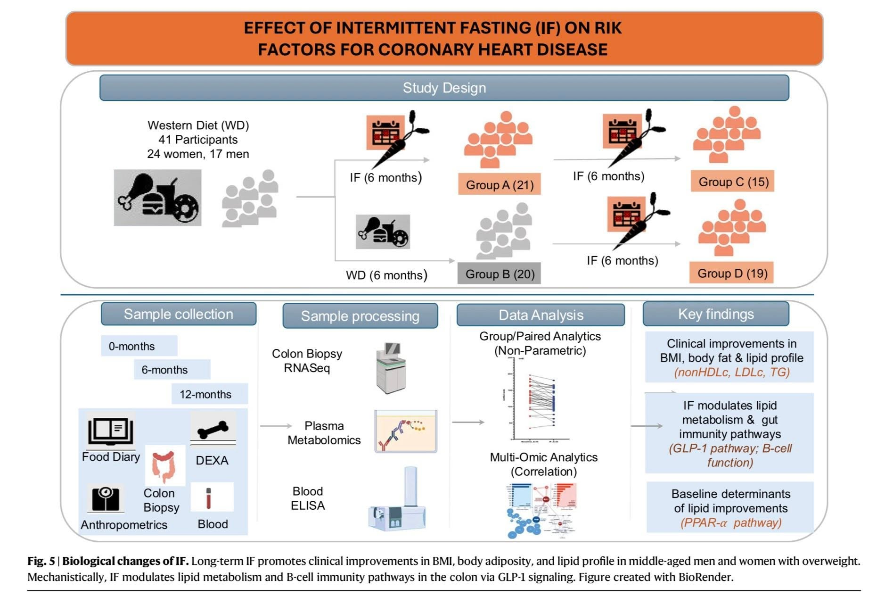
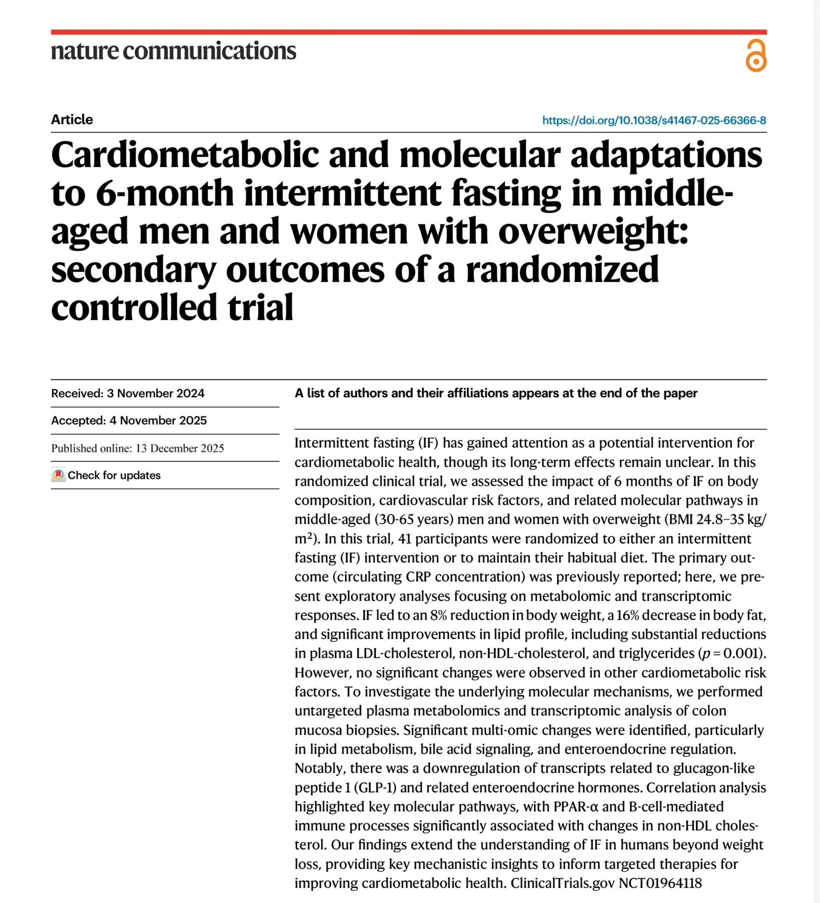
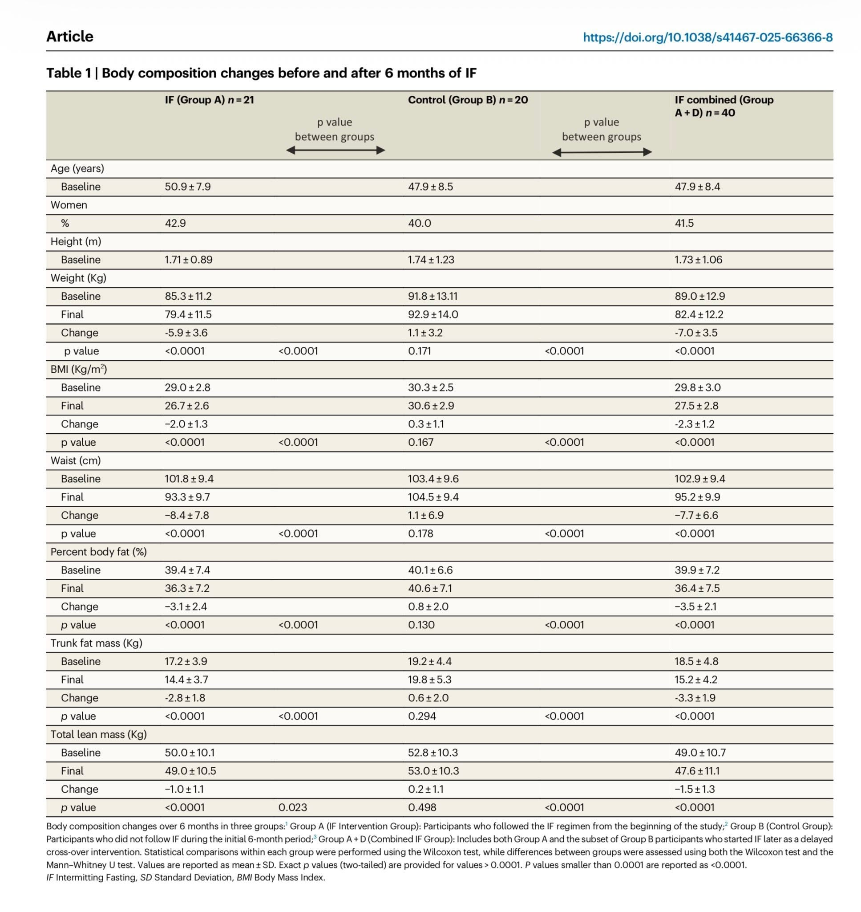
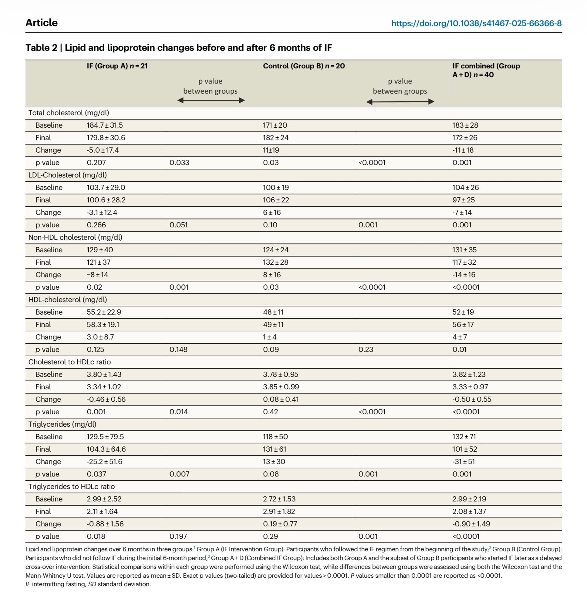

Recently published randomized trial demonstrating significant benefits of intermittent fasting in humans:
Cardiometabolic and molecular adaptations to 6-month intermittent fasting in middle-aged men and women with overweight: secondary outcomes of a randomized controlled trial - November 2025 - Nature Communications
#fastingHD
Intermittent fasting is everywhere—but how does it actually work in humans?
We’re excited to share our new paper in Nature Communications. We followed middle-aged men and women with overweight for 6 months of intermittent fasting and went deep, from cardiometabolic outcomes to colon tissue multi-omics.
What we found 👇
✅ Meaningful weight and fat loss: ~8% body weight reduction and ~16% body fat reduction (DXA)
✅ Selective lipid improvements: significant reductions in atherogenic lipids, including non-HDL cholesterol ↓ ~11% and triglycerides ↓ ~23% (LDL-C also decreased significantly)
❌ Most other cardiometabolic risk factors did not change: no major effects on glucose, insulin resistance, blood pressure, inflammation, or carotid IMT
This highlights an important point: intermittent fasting is not a substitute for a healthy lifestyle. In this trial, participants largely maintained a typical “Western” dietary pattern on non-fasting days, and improvements beyond lipids were limited.
The surprise?
🧬 IF was associated with clear shifts in gut-derived molecular pathways, including:
- PPAR-α–linked lipid metabolism
- Enteroendocrine signaling (GLP-1–related pathways, PYY, glucagon)
- Immune / B-cell pathways in the colon
Key takeaway (and caution):
The real opportunity may be using IF as a tool to potentiate the benefits of higher diet quality + physical activity + sustainable lifestyle changes—not as a standalone fix.
Proud of my team and grateful to everyone who made this work possible.
📖 Full paper:
Paper · Nat Commun · 2025Cardiometabolic and molecular adaptations to 6-month intermittent fasting in middle-aged men and women with overweight: secondary outcomes of a randomized controlled trialdoi.org
#FastingScience #Metabolism #CardiometabolicHealth #GutHealth #PrecisionNutrition #ClinicalTrials #NatureCommunications




